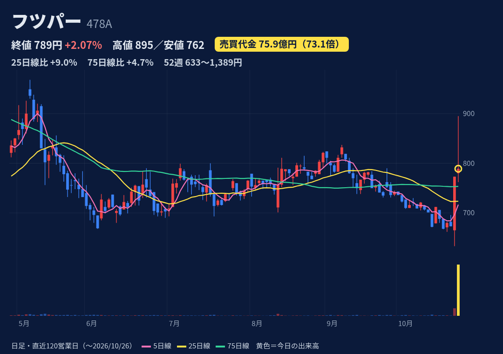
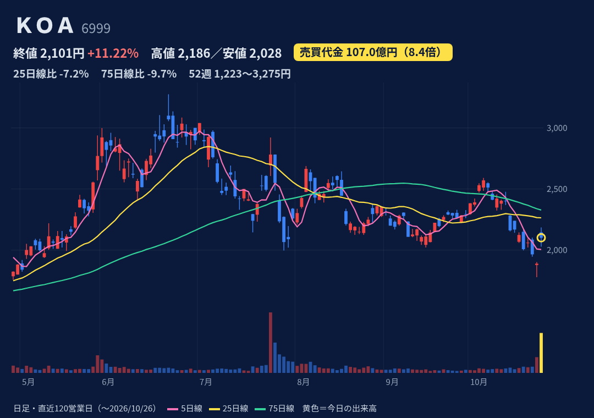
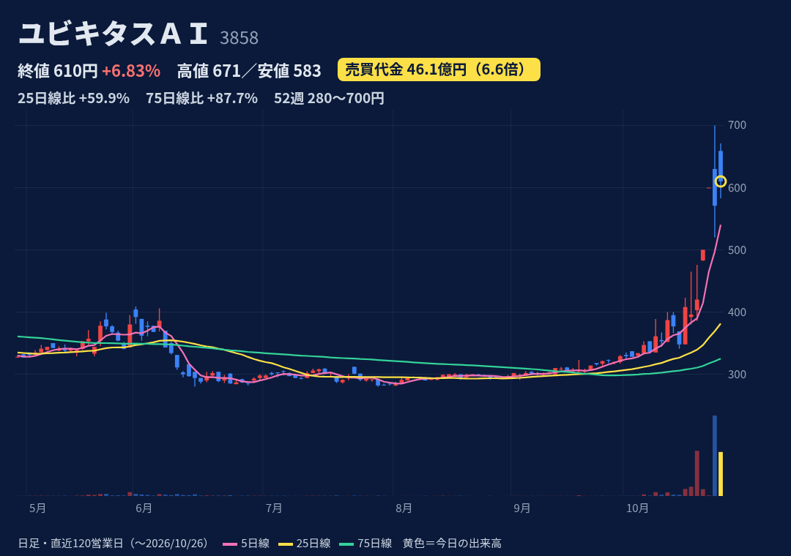
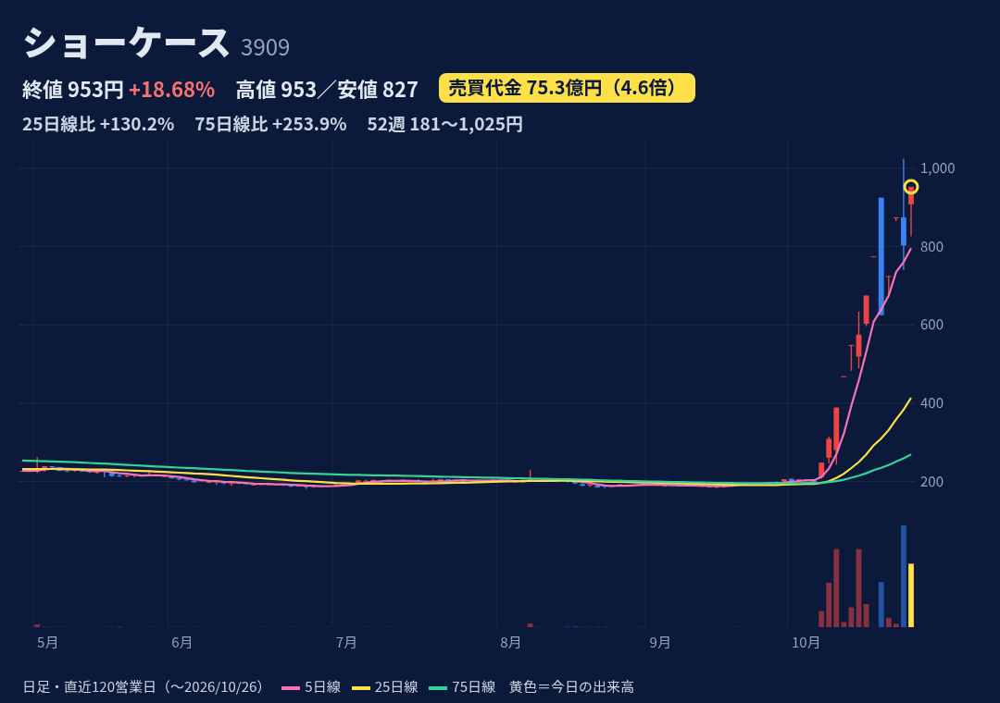
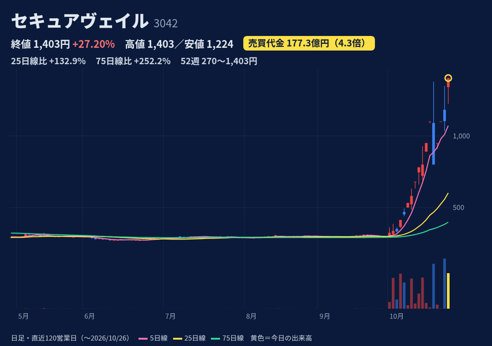
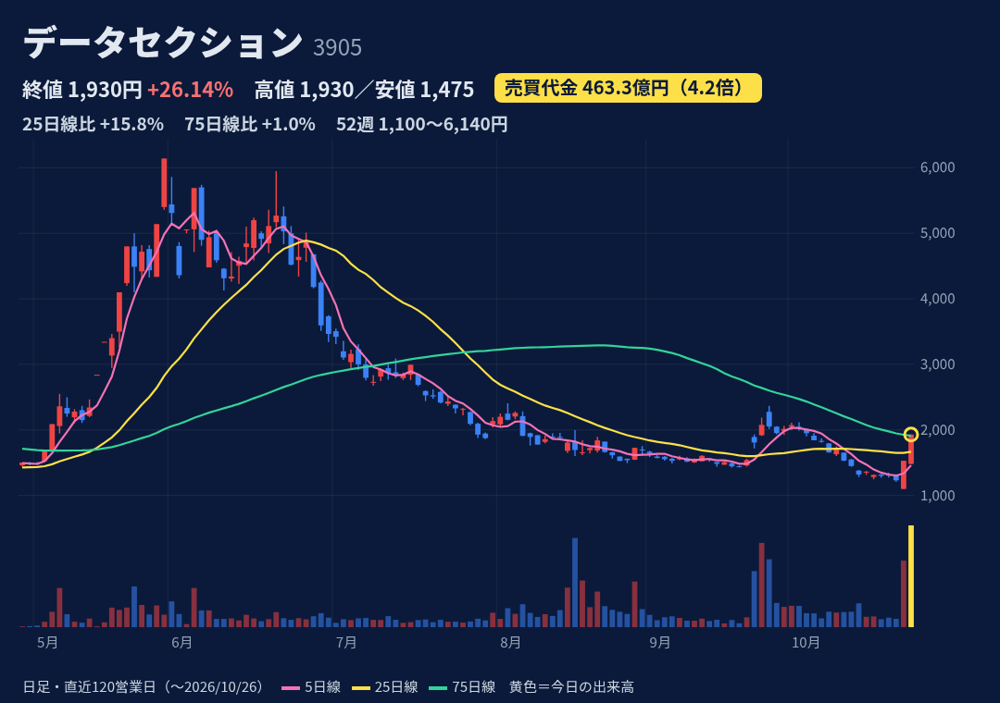

製造業向けAI（外観検査AI「メキキバイト」、ローカルLLM「ラクラグ」等）。2025/12/24上場で約10カ月。上場直後ではない
10/23 10:00、富士通の防衛装備庁委託研究（防衛用マルチAIエージェント）の共創パートナーになったと開示し、同日S高。10/26 13:00にはラクラグのAIエージェント化（11/1提供開始）を開示。今日の上げとの因果は推測
12月決算。上期(1-6月)は売上5.6億・営業益0.27億。通期予想は売上20億（前期比+59%）・営業益4.8億で、進捗は売上28%・営業益6%と下期に偏る。3Q決算は11/16 15:30以降
始値780・高値895・安値762・終値789（+2.1%）。小陽線だが長い上ヒゲ。出来高917万株（発行済の約9割）。52週高値1389（上場初日）・安値633（10/23）で下から2割の位置。25日線724・75日線753の上
10/23時点：買残69.6万株・売残9.1万株・倍率7.6倍（10/16は15.2倍、売残がほぼ倍増）。日々公表・増担保・日証金措置なし。9/30に貸借銘柄に選定
上場来高値から半値近く下がった小型グロース株。20日平均の売買代金が約1億と薄く、倍率73倍が膨らみやすい。2/13には決算翌日に-25.8%の前例。ストックオプションで株数が少しずつ増えている

固定抵抗器で世界大手の電子部品メーカー。自動車向けが大きく、国内生産が7割超
10/23 15:30に上期決算を発表し、通期予想を上方修正（営業益53.6億→83.1億、前期比2.3倍）。配当も63円→78円に増額。理由は中国中心のAI関連機器向けの伸び
上期：売上436億（前年比+26%）・営業益37.4億（2.9倍、従来予想25.4億を上回る）。通期予想は売上915億・営業益83.1億で、進捗は営業益45%。次回3Q決算の日付は未確認（前年は1/28）
始値2145・高値2186・安値2028・終値2101（+11.2%）。窓を開けて上げたが、寄り値より安く引けた陰線。52週高値3275（6/22）・安値1236で4割の位置。25日線2264・75日線2328の下
10/23時点：買残105.5万株（10/16の66.8万株から+58%）・売残3.8万株・倍率27.6倍。決算前に買残が急増。日々公表・規制なし
中国のAI関連機器向け需要に頼る部分がある。7/24（1Q決算）は+11.5%のあと翌営業日に-8.3%の前例。積み上がった信用買残（倍率27倍）が戻り売りになりやすい

組込みソフト・IoTソリューション。セキュリティ（脆弱性検証・TPM）、耐量子暗号、SDV向け検証ツールを手がける
10/26当日の個別材料は確認できず。株探は「有望テーマを複数抱える出遅れ株」（量子・サイバー・SDV）と説明。10/21のPHP脆弱性問題からセキュリティ株に資金が戻った流れ。10/19に展示会出展を発表
赤字が続く。1Q(4-6月)：売上7.6億（前年比-12%）・営業損失1.45億。通期予想は売上39.5億・営業損失2.0億で、2期連続の営業赤字見通し。2Q決算は11/13予定（株探）
始値659・高値671（S高）・安値583・終値610（+6.8%）。上ヒゲの陰線。52週高値700（10/23）・安値280で高値圏。25日線382を約6割上回る。9/30の329円から約1.9倍
10/23時点：買残107.6万株（発行済の約10%）・売残1.4万株・倍率約75倍。10/23から日々公表。東証の増担保はなし（10/23時点）
赤字の低位小型株で、テーマだけで買われている。2025/11にも2日で+23%・+19%のあと-16.5%で失速した前例。信用買いが重く、売残は少ないので踏み上げ要素は小さい

Web最適化・DXクラウド。オンライン本人確認「ProTech ID Checker」（累計500社超）。AIフュージョンキャピタルグループ(254A)の子会社
10/26当日の個別材料は確認できず。直近は10/23 11:00にAnchorZとの業務提携、10/22に親会社AIFCGとの販売契約を発表。背景は金融庁が10/9にICチップ本人確認の前倒しを要請したこと
決算期を3月に変更（前期は15カ月）。1Q(4-6月)：売上2.96億・営業益0.03億。通期予想は売上14.6億・営業益1.5億（リユース事業売却後）。2Q決算は11/16予定（株探）
始値908・高値953・安値827・終値953（+18.7%）でS高引け。10/7から急騰し、52週安値181（6/25）から約5倍。25日線414の2倍超。10/20にS安(-19%)、10/23に一時S高から-8%の荒い動き
10/23時点：買残45.1万株・売残0.84万株・倍率約54倍（10/22の売残7.85万株がほぼ解消）。10/16から日々公表。東証の増担保はなし（10/23時点）
フィスコは10/20に「仕手化続く」と表現。業績に比べ株価が先行（予想PERは株探で74倍）。10/20のS安が示すように、急落リスクが高い。親会社が上場している

ネットワークセキュリティの設計・構築・24時間監視（SOC）とログ分析
10/26当日の個別材料は確認できず（S高一覧では「情報セキュリティ関連」）。直近は10/20 9:00にM365監査ログ分析の無償提供を発表。10/21のPHP脆弱性でセキュリティ株に資金が戻った流れ
1Q(4-6月)：売上2.6億（前年比-17%）・営業損失0.52億（前年は黒字0.39億）。通期予想は売上14.4億・営業益1.38億。2Q決算は11/13予定（株探）。10/6に自社株買いを終えた
始値1340・高値1403・安値1224・終値1403（+27.2%）でS高引け、52週高値を更新。52週安値は270（6/10）。25日線602の2.3倍。10/20に高値1377からS安800（-27%）の前例
10/23時点：買残69.0万株・売残52.0万株・倍率1.33倍（売残は発行済の約7%）。日々公表中で、10/6から日証金が貸借取引の申込制限。東証の増担保はなし（10/23時点）
株価が業績から大きく離れている（株探でPER109倍・PBR8.7倍、1Qは営業赤字）。売残が多く、踏み上げ相場の色が濃い。1日でS高からS安まで振れる値動き

AIデータセンター運営（GPUクラウド）が主軸。ビッグデータ分析も行う
10/23 12:15ごろ、9/18の大口契約に基づくGPUコンピュートサービスの提供開始を開示し、S高。今日もS高。10/26 9:30にアースエレメンツが筆頭株主（11.48%）になったと開示
1Q(4-6月)：売上63.3億（前年の9.5倍）・営業益48.4億（黒字転換）。通期予想は売上1622億・営業益248億で、進捗は売上3.9%。2Q決算は11/16予定（株探）
始値1483・高値1930・安値1475・終値1930（+26.1%）で2日連続S高引け。52週高値6140（5/29）・安値1100（10/23）で下から16%の位置。25日線1667・75日線1911を上抜け
10/23時点：買残1055万株（発行済の約27%）・売残203万株・倍率5.2倍。8/31から日々公表が続き、日証金は注意喚起中（9/24〜10/14は申込制限）。東証の増担保はなし（10/23時点）
希薄化の履歴：第23回新株予約権で約2139万株を発行。調達額は計画を約286億下回り、会社は「最適な資金調達方法を検討中」。大株主First Plusの保有比率が頻繁に増減。5月の急騰後に約7割下げた前例
株価・出来高・信用残：取引所データ。材料：各社開示・各社報道。